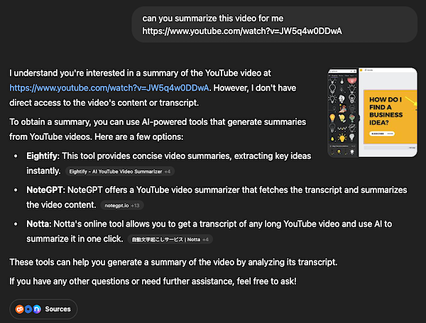
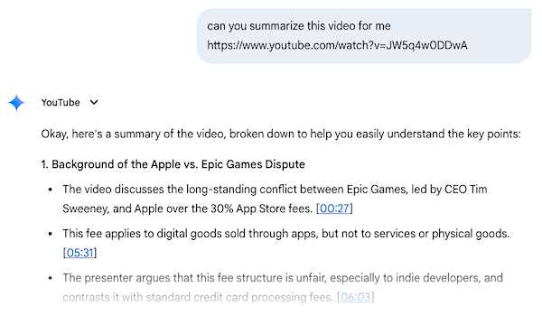
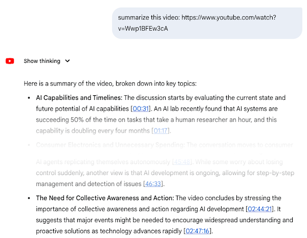

Chasing Timestamps: Summarizing Long YouTube Videos with AI
02 May, 2025
There are plenty of tools out there that can help with this kind of task. But I’m not here to promote any of them :) I’m here to experiment with prompts and see how far they can actually take me.
Let’s start with the core idea of this experiment. Lately, I’ve been following way too many YouTube podcasters, and they all love to dive into long, sprawling conversations. It’s tough to decide which episodes are worth listening to—especially when you’re not familiar with the guest or the topic. That’s where summaries could come in handy.
In theory, generating a summary from text isn’t too difficult for a large language model (LLM). But I wanted to take it a step further. I don’t just want a summary—I want a list of the key topics discussed, each with a timestamp so I can jump to the relevant part of the video if I’m interested.
For this test, I picked two videos more or less at random—just to see how different AIs handle them. The key variable here is video length. I figured the longer the video, the more challenging it would be for the AI to produce a solid output. Here are the videos I used:
Now, let’s say we don’t use any of the preconfigured tools. What can we do instead? Well, we still need some tools—at the very least, something to help us extract text from the video. Because if you ask ChatGPT to summarize a video just by giving it a YouTube link, you’ll get something like this:

Gemini (2.0 Flash), on the other hand, handles that task with no issue. It provides a summary complete with timestamps—which is awesome, especially since I didn’t even ask for them. Super convenient. Thumbs up.

But here’s the catch: try the same approach with a longer video (like a two-hour-plus Joe Rogan podcast), and Gemini (2.0 Flash) only summarizes up to about the 50-minute mark—then it just stops.
I tried the same thing with the more advanced Gemini model (2.5 Pro). It did produce a summary for the entire video—but with massive gaps. It jumps from the 46-minute mark all the way to 2:44:00. Obviously, that’s not helpful. It’s clear a lot of content got left on the cutting room floor:

So I tried a different tactic. What if I provide the AI with the video’s subtitle file (with timestamps) and ask it to summarize that instead? Something like this:
You are given a SRT subtitle file of a podcast episode. Please provide a high-level summary of the main topics discussed in the video.
For each topic, include:
- A concise title or description of the topic
- The timestamp (from the subtitles) when this topic was first introduced
Your goal is to help me quickly understand what the episode covers and allow me to jump to specific segments in the video if needed. Focus only on major themes or key discussion points, not every small detail.
Since ChatGPT can’t access YouTube directly, I went with this workaround—pulling subtitles from the video and feeding them into the AI.
Unfortunately, ChatGPT didn’t do great here either. With Theo’s video, the summary only covered up to about the 20-minute mark. After that, it just... stopped. And this issue wasn’t model-specific. I tested 4o, o4 mini, and o3—all gave me incomplete summaries.
The results for the longer video (the Joe Rogan episode) were even worse. ChatGPT (4o) only summarized content up to ~14 minutes, then jumped all the way to 01:43:33. That kind of gap just doesn’t make sense. It seems like timestamps are somehow messing with the model’s ability to process the whole file.
I tried the same prompt with a bunch of models—4.5, o4-mini, etc.—and saw the same pattern. Some summarized the first 30 minutes and gave up; others skipped straight to the final 10. Either way, around two hours of content were completely missed.
Now let’s return to Gemini (2.5 Pro) and feed it the subtitle file. This time, it worked surprisingly well. It analyzed the entire file and gave me a list of bullet-pointed topics, each with timestamps (and short summaries, which I’ve omitted here for brevity):
- AI Capabilities and Timelines (00:00:14,000)
- Quantum Computing's Role in AI (00:02:24,959)
- Critique of Academia vs. Startups (00:03:26,159)
- Ego, Humility, and Reality Checks (00:08:21,039)
- Human Level AI vs. Superintelligence (00:14:02,000)
- Historical Context of AI and Mechanization (00:16:43,279)
- AI's Energy Consumption (00:18:39,039)
- Cybersecurity Threats and Espionage (China Focus) (00:21:30,320)
- Historical Espionage Techniques (00:25:25,120)
- Information Warfare and Propaganda (00:32:15,679)
- Security Challenges in AI Development (US vs. China) (00:48:50,880)
- Semiconductor Manufacturing Challenges (01:09:23,839)
- US vs. China Strategic Posture and Competition (00:54:29,680)
- AI Alignment and Control Problem (01:25:23,239)
- Potential Futures (Utopia vs. Dystopia) (01:34:51,600)
- Open Source AI Risks (02:42:51,760)
Gemini even included excerpts from the subtitles to show where each topic came from. Super impressive.
Summary
Gemini
Gemini (2.5 Pro) can fetch content directly from YouTube videos—but it struggles with longer ones. It handles videos up to around 40 minutes just fine, but when you feed it something closer to two hours, it tends to fall apart. However, if you extract the subtitles and feed them in directly, Gemini handles them really well. It understands timestamps and produces a coherent, timestamped summary of the major discussion points.
ChatGPT
ChatGPT can’t fetch content from a YouTube link. Even with subtitle files, it couldn’t produce a full summary. No matter the model, it consistently missed large chunks of content.
You might also be interested in the following posts:
MCP is a powerful piece of tech. The idea of an API for AI unlocks a whole new world of possibilities. While it still feels a bit distant from our everyday workflows, we’re actively exploring how to make it fit—and whether a simpler alternative might work just as well.
Working with AI Agents isn’t just about choosing the right tool—it’s about learning how to guide it. This post explores prompt refinement, system instructions, and iterative techniques that can help developers get better results from AI.